Network Layer (Layer 3)
IP-Adressen
Mit hilfe von IP-Adressen routen Router die Pakete umher. IP-Adressen sind hirarchisch aufgebaut.
Classful vs Classless
| Klassen | Adressbereich | Anzahl Netze | Interfaces pro netz |
|---|---|---|---|
| A | 1.0.0.0 - 127.255.255.255 | 127 | 16'777'214 |
| B | 128.0.0.0 - 191.255.255.255 | 16'384 | 65'534 |
| C | 192.0.0.0-223.255.255.255 | 2'097'152 | 254 |
Die Klasse D (224.0.0.0 - 239.255.255.255) sind für Multicast-Adressen vorgesehen. Dies ist ein separates Protokoll mit separaten Adressierung.
Die Klasse E (224.0.0.0 - 255.255.255.255) ist reserviert für zukünftige Netzwerke.
Die folgenden privaten Netzwerke gibt es:
| Klasse | Netzadresse | Subnetmaske |
|---|---|---|
| A | 10.0.0.0 | 255.0.0.0 |
| B | 172.16.0.0 - 172.31.0.0 | 255.255.0.0 |
| C | 192.168.0.0 - 192.168.255.0 | 255.255.255.0 |
Netmask
Die IP-Adresse ist in zwei Teile aufgeteilt: Die Netzadresse und Host-Adressen. Die Netzmaske unterteilt eine IP-Adresse in die Netzadresse und Hostadresse.
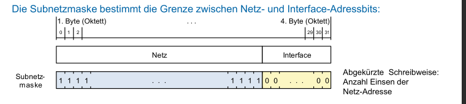
Alternativ schreibweisse ist "/24" für eine Subnetzmaske mit 24 1 und 8 0. Daher gibt es \((32-24)^2-2=255-2=254\) addressierbare Hosts. Es werden noch zwei Adressen abgezogen, da zwei Adressen für die Broadcast- und Netzwerk-Adresse benötigt werden.
Routing
Dank routing weiss ein Router wohin ein Paket gesendet werden muss. Dies wird anhand der IP-Adresse gemacht.
Routing-Tabelle
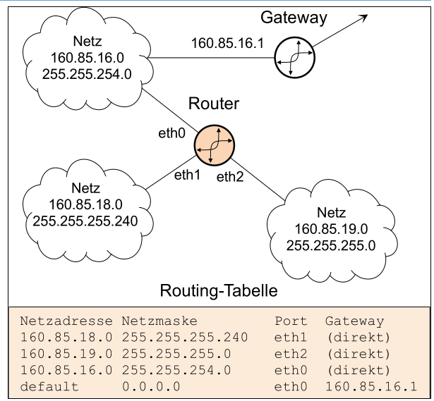
In der Routing-Tabelle steht, über welcher Port welches Netzwerk ansprechbar ist. Darin steht der Port, an dem das Netzwerk erreichbar ist, die Netzwerkadresse und Netzmaske. Zusätzlich gibt es ein Default-Gateway. Über diesen werden alle Pakete weitergeleitet, welche zu keinem anderen Netzwerk passt. Es kann für ein Netzwerk mehrere Einträge geben.
Die Routing-Tabelle ist geordnet nach der Netzmaske. Dabei ist das kleinste Netzwerk zu oberst (die höchste Subnetz). Die Routing-Tabelle wird von oben nach unten durch geschafft. Zum ersten Hit wird das Paket gesendet.
Flaches- vs Hirarchisches- Routing
Bei Flachem-Routing kennt jeder Router jedes mögliche Ziel im Netzwerk und andere Zielnetzwerke. Das Netzwerk Verhalten kann besser vorausgesagt werden und es können alternative Routings festgelegt werden, welche verwendet werden, wenn die schnellste Route ausfällt. Die Routing-Tabellen aktuell zu halten, ist allerdings ein sehr grossen Aufwand.
Beim Hirarchieschen-Routing hat jeder Host zwei Einträge in der Routing-Tabelle. Ein Eintrag für das lokale Netz und ein Eintrag für alles andere, was an Router weitergeleitet wird.
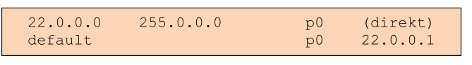
Internet Protokoll (IP) Format
Das folgende Diagramm zeigt der Header des IP-Protokolles:
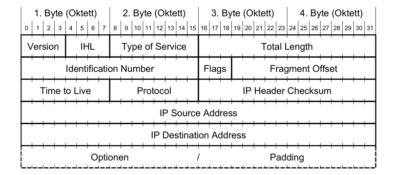
-
Version (4 Bit) Gibt die Version des IP-Headers an. Es ist somit möglich mehrere IP-Version (IPv4 oder IPv6) zu betreiben.
-
Internet Header Length (IHL) (4 Bit) Gibt die Länge allen Headers an. Der gelesene Wert wird mit dem Faktor 4 multipliziert. Wenn also 5 gelesen wird, sind die Headers 20 Bytes lang. IHL muss zwiscehn 5 (20 Bytes) und 15 (60 Bytes) sein. Der fixe Teil eines IP-Headers sind 20 Bytes, also bleiben 40 Bytes für Optionale Felder.
-
Type of Service (8 Bit) Gibt an, was für eine Art von Leitung es ist. Ein Sender kann danach entscheiden, ob er eine Leitung, welche eine hoche Bandbreite hat, dafür ein schlechten Ping (wie eine Satelitenverbindung) oder lieber eine "normale" Glassfasserleitung benützt. Dies wurde nie von allen Service-Providern unterstützt.
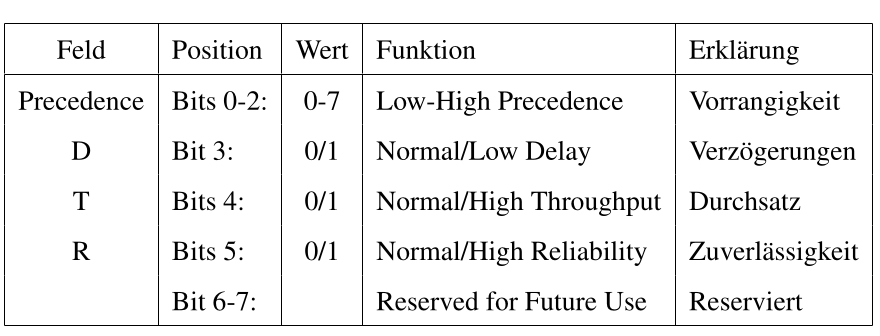
-
Total Length (16 Bit) Die totale Länget des IP-Paketes mit Headers und Daten.
-
Identifiaction (16 Bit) Ein Wert, welches ein Paket eindeutig identifiziert. Dieser Wert wird benützt, um fragmentierte Pakete wieder zu einem Paket zusammen zusetzen.
-
Flags (3 Bit) Beinhaltet Kontrollflags für die Fragmentierung
| Feld | Position | Wert | Funktion | Erklärung |
|---|---|---|---|---|
| Bit 0 | reserved, must be zero | Reserviert, immer Null | ||
| DF | Bit 1 | 0/1 | May / Don't Fragment | keine Fragmentierung |
| MF | Bit 2 | 0/1 | Last / More Fragments | Ob ein Folgefragment kommt |
-
Fragment Offset (13 Bit) An welcher stelle ein fragmentiertes Paket in das ganze Paket gesetzt werden soll. Der gelesen Wert wird mit dem Faktor 8 multipliziert. (Aus 90 wird 720 Bytes)
-
Time to Live (TTL) (8 Bit) Gibt die Anzahl Sekunden an, welche das Paket noch im Netz sein darf. Wenn der Wert 0 wird, wird das Paket verworfen. In der Praxis ist es schwierig zu messen, wie lange ein Paket unterwegs ist und daher dekrementiert der Router der Wert um
1wenn er es weiter sendet. Wenn ein Router ein Paket mit TTL=1 erhaltet, dekrementiert er es zu0und verwirft es. -
Protocol (8Bit) Das Protokol, welches im Datenteil übertragen wird. Folgendes sind die wichtigsten Beispiele:
| Protocol | Keyword | Protokollbezeichnung |
|---|---|---|
| 1 | ICMP | Internet Control Message |
| 6 | TCP | Transmission Controll Protocol |
| 17 | UDP | User Datagram Protocol |
-
Header Checksum (16 Bit) Eine Prüfsumme, welche nur über den IP-Header gebildet wird. Diese muss von jedem Router neu berechnet werden, da gewisse Felder vom Router modifiziert werden.
-
Source Address (32 Bit) Die IP-Adresse des Senders
-
Destination Address (32 Bit) Die IP-Adresse des Empfängers
-
Options und Padding (max. 40 Bytes) Optionale Felder
Maximum Transfer Unit (MTU)
Die MTU gibt an, wie viel Bytes über eine Leitung geschickt werden können. Dabei werden aber nur die Daten-Bytes des Ethernet-Frames gezählt. Die Bytes des Ethernet-Headers gelten nicht.
Headers von gekapselten Protokollen, wie IP oder ICMP, müssen natürlich mit gezählt werden, da sie teil der Daten-Bytes des Ethernet-Frames sind.
Addressauflösung
TODO
Address Resolution Protocoll (ARP)
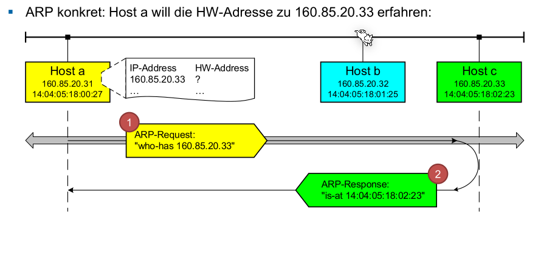
ARP ist ein Layer 2 Protokoll, da es die Namensauflösung von IP-Adressen zu MAC-Adressen zulässt.
Geräte haben typischerweisse eine ARP-Tabelle, in welcher ARP-Responses gecachet weden.
TODO: Beispiel
Gratuitous ARP
Gratuitous heisst unnötigt/unbegründet.
TODO
Fragmentieren und Reassembly
Fragmentieren wird gebraucht, wenn ein Paket über eine Leitung geschickt werden soll, welche eine kleinere Maximum Transfer Unit (MTU) hat, als die Grösse des Paketes. In diesem Fall wird das Paket aufgeteilt/fragmentiert.
TODO
Internet Control Message Protocol (ICMP)
ICMP Pakete werden der Schicht 3 zugeordnet, obwohl sie in einem IP-Paket gekapselt werden.
Es gibt einige Typen von ICMP Paketen: (4 - Source Quench ist depricated - hiess, dass der Sender langsämer soll senden. Hat sich erübrigt, da es in TCP eingebaut w)
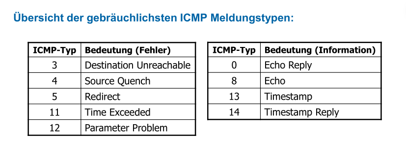
| ICMP-Type | Bedeutung | Beispiel |
|---|---|---|
| 3 | Destination Unreachable | Wenn der Router ein Node nicht erreiche kann, weil z.B. die MTU zu klein ist, das höhere Protokoll deaktiviert ist beim Host, das Paket fragmentiert werden muss aber DF gesetzt ist oder der Node ausgesteckt wurde: TODO Code Protocol Unreachable=Node kommuniziert nicht über das Protokol; Port Unreachable = Kein Program hört auf diesen Port; 13 Communication adminstrativvely prohibited = Die Firewall blockiert etwas. Destination Unreachable kann auch genutzt werden, um die MTU einer Leitung zu finden |
| 4 | Source Quench | Der Puffer des Routers ist voll |
| 5 | Redirct | Wird an ein Host geschickt, wenn der Router feststellt, dass ein Paket an den falschen Router geschickt wurde |
| 11 | Time Exceeded | Wenn das TTL-Feld =0 ist, wird es vom Router nicht mehr weitergesendet. Dies kann für Trace-Rout genutzt weden. Jeder Router reduziert das TTL-Feld um 1. Wenn der Router ein Paket mit TTL=1 bekommt wird dies um 1 reduziert und danach verworfen.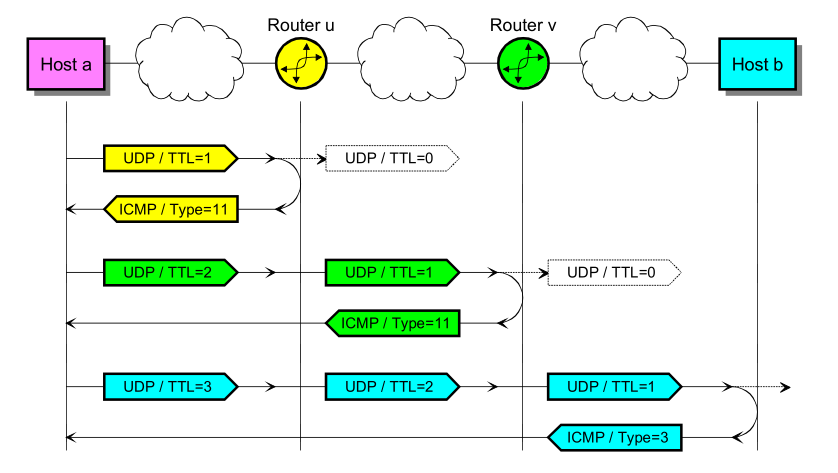 |
| 12 | Parameter Problem | Falls der Host oder Router im IP-Header einen ungültigen Wert hat |
| 0 | Echo Reply | Die Antowort auf ein Echo Request |
| 8 | Echo (-Request) | Pingt ein Knoten an, welcher ein Echo Reply senden sollte |
| 13 | Timestamp | Verhalten sich gleich wie Echo-Requests/-Replies aber senden noch die Zeit des Senders und Empfängers |
| 14 | Timestamp Reply | Siehe 13 - Timestamp |
Destination Unreachable (Type 3)
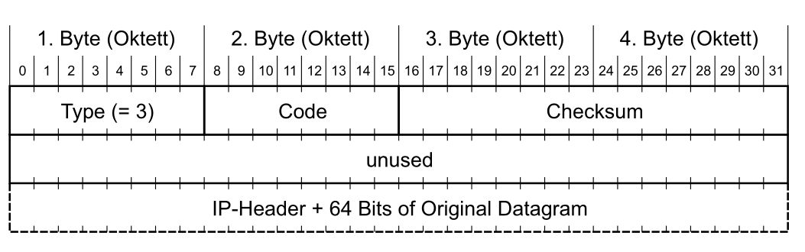
- Code-Feld: 0 = net unreachable; 1 = host unreachable; 2= protocol unreachable; 3 = port unreachable; 4 fragmentation needed and DF set; 5 source route failed; 13 = communication administratively prohibited
- Internet Header + 64 Bits of Original Datagram enthält den ersten Teil des Datagramms, das die ICMP-Meldung ausgelöst hat. Damit ist der ursprüngliche Absender in der Lage, den Fehler genauer zu bestimmen.
Time Exceeded Message (Type 11)
Das Format ist gleich, wie bei Destination Unreachable (Type 3). Das Code-Feld kann folgende Werte haben: 0 = time to live exceeded in transit; 1 = fragment reassembly time exceeded.
Echo-Request/-Reply Message (Type 8 / Type 0)
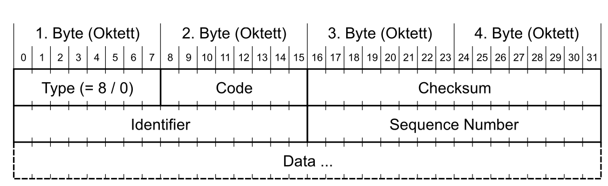
- Identifier: ID, damit der Sender die Echo-Reply zu einem Prozess kann. In der Reply steht die selbe Zahl
- Sequence Number: Wird bei jedem Echo-Request inkrementiert. In der Reply steht die selbe Zahl.
- Code-Feld: ist null
Struktur von ICMP-Pakete
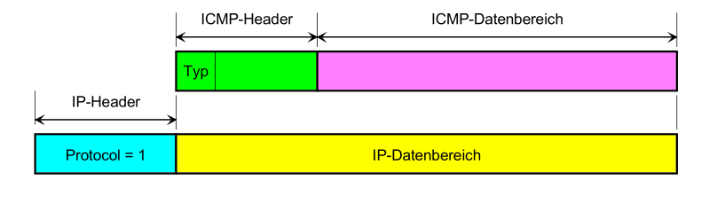
Das ICMP Paket wird in einem IP-Paket verschachtelt (Protocol=1 steht für den IP-Header).
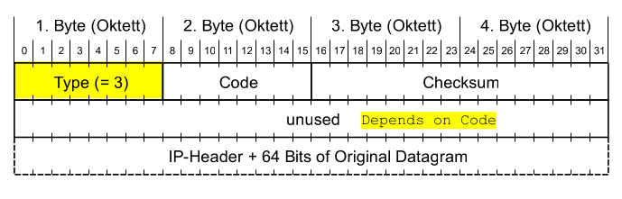
Anwendungen
- MTU einer Leitung finden
Dafür kann das Don't Fragment auf
1gesetzt werden und versucht werden, wie hoch - Traceroute
- ping
IPv6
IPv6 bnutzt 128 Bits, bzw. 16 Bytes und ermöglicht es \(2^{128}\) Adressen zu generieren. IPv6 bringt zusätzlich noch mehr Vorteile:
- Entlastung der Router
- Quality of Service: Flow Labels
- Verbessertes Routing: Routing Header
- Verbesserte Sicherheitsmechanismen
- Die MTU wird durch den Absender ermittelt und es gibt daher keine Fragmentierung, was den Router weiter entlastet
- Ein Interface kann mehrere IPv6 Adressen haben
Eine IPv6 Adresse wird Hexadezimal dargestellt: 2001:0620:0000:0004:0A00:20FF:FE9C:7E4A. Dabei können Nullen zu begin von Zahlen weggelassen werden (...:0620:...=...:620:...). Aus dem ergibt sich 2001:620:0:4:A00:20FF:FE9C:7E4A. Zusätzlich können lange Nullfolgen durch 2 Doppelpunkte ersetzt weden: 1023:0000:0000:0000:1736:a673:88a0:a620 = 1023::1736:a673:88a0:a620.
Der Doppelpunkt darf nur einmal genutzt werden.
IPv6 Adressräume
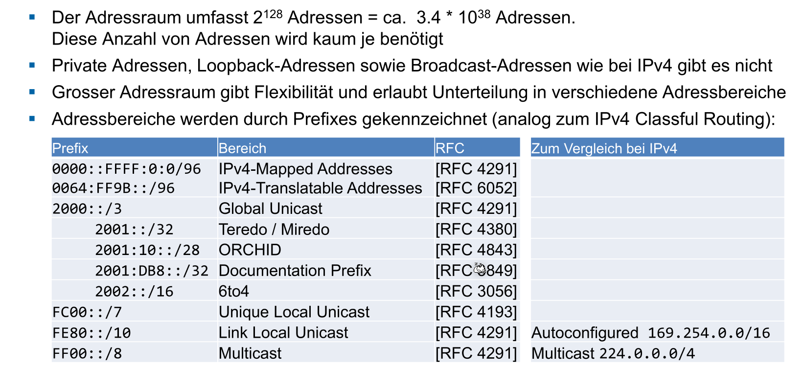
Es gibt eine Loopback Adresse: ::1/28
IPv6 Header
Ein IPv6 Header ist 40 Bytes lang (ein IPv4 hat nur 20 Bytes)
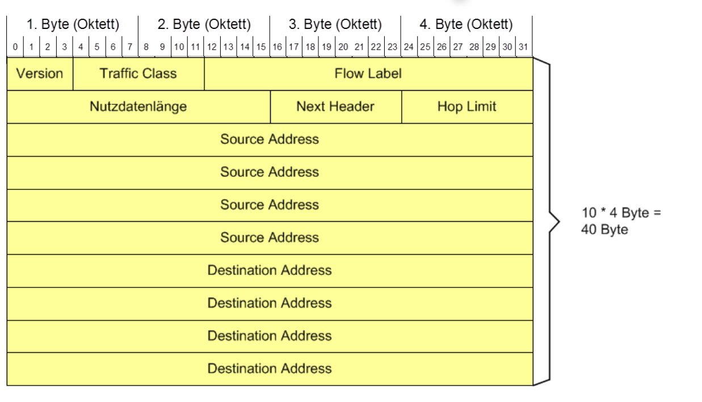
Header Extension
Im Next Header Feld kann angegeben, was der nächste Header oder Protokol ist. Dies reduziert die Grösse, da nur die nötigen Headers geschickt werden müssen. Ebenfalls gibt es für den Router weniger zu tun, da es weniger Felder zu verarbeiten gibt.
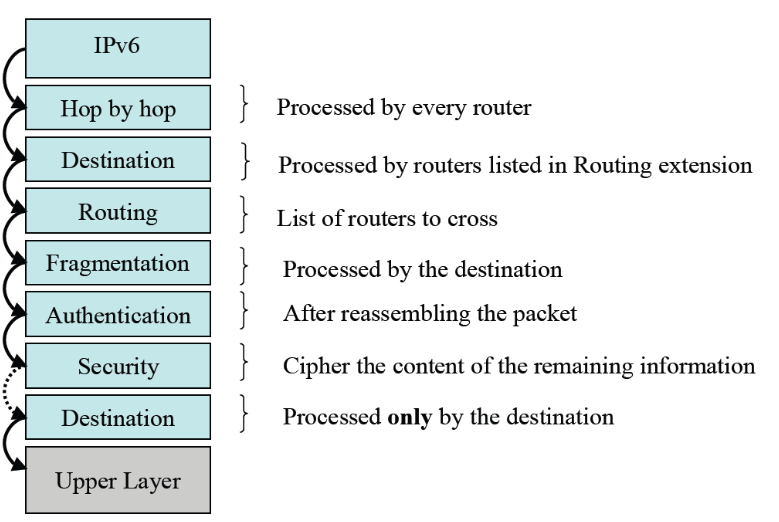
In der folgenden Tabele sind die Header-Extension Types und Protokol-Types für das Next Header-Feld im IPv6 Header
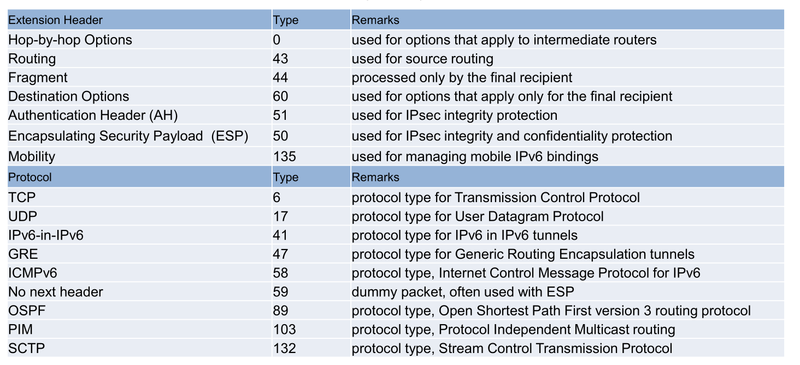
- Hop-by-hop (typ=0) enthält Optionen, die von allen IPv6-Knoten auf der Strecke vom Sender zum Empfänger beachtet werden müssen. Typisches Beispiel ist die Jumbogram Option. Dieser Extension Header muss immer zuerst stehen.
- Routing Header (type = 43) Wird vom Sender verwendet, um den Pfad zum Empfänger zu bestimmen. Er enthält eine Liste von Routern, über die das betreffende IPv6 Paket geleitet wird. Diese Option wurde als Sicherheitsrisiko erkannt und wird nur noch in modifizierter Form für «Mobile IPv6» eingesetzt.
- Fragment Header (type = 44) Enthält Informationen für das Reassembly analog zu IP V4
- Authentication Header AH (type = 51) und Encapsulating Security Payload Header (Type =51) Enthalten Daten, welche die Vertraulichkeit eines IPv6 Pakets sicherstellen (RFC 4302).
- Destination Options (type = 60) Dieser Header enthält Optionen, welche nur vom Endgerät beachtet werden müssen (im Gegensatz zu den Hop-by-Hop Options).
Im folgenden Bild ist ein Beisiel für das Next Header-Feld:
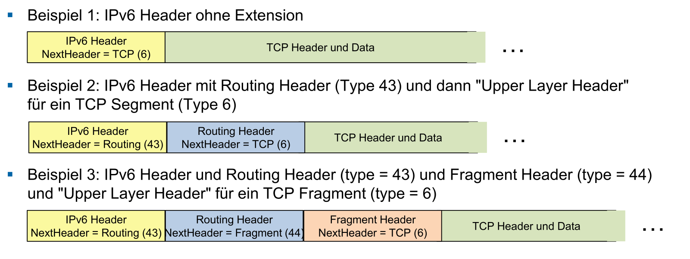